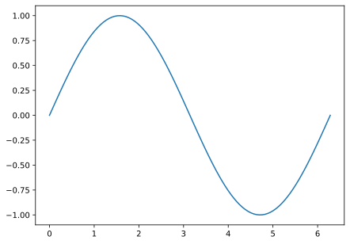

x = 3
print(x)3Passata l’euforia per il successo con il nostro primo programma, in questa sezioni cercheremo, in un certo senso, di ripartire da zero e riflettere più in profondità su un certo numero di cose che abbiamo lasciato in sospeso.
Come abbiamo detto, le variabili in Python si creano con l’operatore di assegnamento =, ed alle variabili ci si può comodamente riferire per tutto il loro ciclo di vita con il nome che abbiamo usato al momento dell’assegnamento, e.g.
x = 3
print(x)3Quando si parla di variabili, una delle prime cose che è utile realizzare è che l’oggetto a cui fa riferimento il nome, che con un leggero abuso di terminologia potremmo chiamare il valore della variabile, può cambiare durante l’esecuzione del programma
x = 3
print(x)
x = 11
print(x)3
11(Se ci pensate è banale. Programmare non sarebbe molto interessante se non potessimo cambiare i valori delle variabili.) La cosa non è da poco, perché significa che, quando calcoliamo un espressione che coinvolga una variabile, dobbiamo fare attenzione a quando esattamente andiamo a valutare la variabile stessa.
Da questo punto di vista le regole dell’assegnazione sono semplicissime:
=;Detta così, la cosa non pare particolarmente problematica. Ad un’analisi appena più approfondita, però, ci accorgiamo subito di alcune cosa interessanti, la prima delle quali è che la nostra variabile può stare contemporaneamente a sinistra e a destra dell’operatore di assegnamento! Prendete ad esempio
Sorprese? Non dovreste, perché tutto a perfettamente senso, secondo le regole che abbiamo detto. Passo per passo:
x vale 3;x al valore 2—da questo punto in poi x non vale più \(3\), ma \(2\)!La cosa è talmente utile ed utilizzata, che la maggior parte dei linguaggi di programmazione (Python incluso) prevedono specifiche scorciatoie per eseguire operazioni aritmetiche sul posto
x = 2
x += 10
print(x)
x *= 7
print(x)12
84L’altra cosa da tenere sempre a mente è che, se a destra dell’operatore di assegnamento c’è un’espressione, a sinistra c’è sempre un nome, per cui l’interprete, giustamente, si lamenta se provate a scrivere
2 * x = 2Cell In[5], line 1 2 * x = 2 ^ SyntaxError: cannot assign to expression here. Maybe you meant '==' instead of '='?
Questo è un buon momento per fermarsi un secondo a riflettere sulle differenze tra l’operatore di assegnamento che abbiamo appena visto e l’operatore di uguaglianza a cui siamo abituati dall’aritmetica elementare. Guardiamo per un attimo le due espressioni \[ x = 2x - 4 \quad\text{e}\quad 2x = 2 \] Formalmente sono identiche a quello che abbiamo scritto nei due frammenti di codice sopra, ma questa volta le interpretiamo come semplici equazioni di primo grado le cui soluzioni sono \(x = 4\) e \(x = 1\), rispettivamente. In entrambi casi la conclusione è completamente diversa.
La differenza fondamentale è che il segno di uguaglianza in aritmetica si mette tra due espressioni, non tra un nome ed un espressione. Non è cosa da poco, ed è potenzialmente contro-intuitivo per chi si avvicina alla programmazione con un’educazione pregressa di tipo matematico (in pratica tutti).
La maggior parte dei linguaggi di programmazione moderni usa il simbolo = per denotare l’operatore di assegnazione. Questa sintassi ha il vantaggio di essere succinta, a scapito, però, di un costo cognitivo non nullo dovuto alla potenziale confusione con l’uguaglianza dell’aritmetica. Storicamente, le alternative al simbolo = che sono state utilizzate includono := (Pascal, Ada, Go) e <- (F#, R), che sono forse, in molti sensi, più espressive. Lascio a voi decidere se evitare una possibile, piccola confusione iniziale valga la pena di infliggere una sintassi verbosa su tutte le programmatrici per tutto il tempo a venire…
A questo punto potreste chiedervi se Python offra qualcosa, in termini di operatori binari, che assomigli all’uguaglianza in aritmetica? La risposta è sì: si chiama operatore di confronto e in Python si scrive come ==. (Si, avete capito bene: due segni di uguale giustapposti).
L’operatore di confronto accetta espressioni da entrambi i suoi lati, e restituisce vero o falso a seconda che le espressioni diano lo stesso risultato oppure no.
print(3 == 3)
print(3 == 4)True
False(Se siete curiose esiste anche il complementare logico dell’operatore ==, che si indica con !=.)
print(3 != 3)
print(3 != 4)False
TrueQuesto vuol dire che abbiamo trovato l’equivalente perfetto dell’uguaglianza aritmetica in Python? Non proprio, perché mentre si possono usare espressioni arbitrariamente complesse, con variabili al loro interno
x = 4
print(2 * x == 2)Falseè anche vero che tutte le variabili debbono essere definite nel momento in cui facciamo il confronto. Ricordatevi che in aritmetica \[ 2x = 2 \implies x = 1 \] mentre la stessa cosa in Python, se non definiamo prima la variabile \(x\), fallisce miseramente, e per un motivo diverso da prima:
2 * x == 2--------------------------------------------------------------------------- NameError Traceback (most recent call last) Cell In[10], line 1 ----> 1 2 * x == 2 NameError: name 'x' is not defined
In altre parole, non potete usare l’interprete di Python per risolvere equazioni di primo grado—o per lo meno non così semplicemente.
Anche se non doveste aver prestato particolare attenzioni, vi sarete accorte che abbiamo già incontrato diversi tipi di variabili. Quando scriviamo
n = 11
x = [1, 2, 3]
title = "scatter plot"è chiaro che il valore di n è un numero (intero, per la precisione), quello di x è una lista, mentre quello di title è una stringa di testo.
Alcuni linguaggi richiedono di dichiarare il tipo di variabile all’inizio, e non permettono di cambiare il tipo durante l’esecuzione del programma. In C o C++, ad esempio, vedreste scritto
int n = 11;L’interprete Python inferisce il tipo di una variabile automaticamente al momento dell’assegnamento sulla base del risultato dell’espressione a destra dell’operatore =, e permette di cambiare il tipo in qualsiasi momento. Questa flessibilità, va da sé, viene ad un costo, sia in termini di velocità, che in termini di strumenti per verificare la correttezza formale del programma.
Ogni variabile nel nostro programma, ad ogni istante, è di un tipo ben preciso. Come faccio a sapere qual è? Semplice: con il built-in type
n = 11
x = [1, 2, 3]
title = "scatter plot"
print(type(n))
print(type(x))
print(type(title))<class 'int'>
<class 'list'>
<class 'str'>Se lasciate perdere per un attimo la parola class, che non avremo tempo di affrontare, nemmeno superficialmente, direi che più o meno è tutto in linea con le nostre aspettative, no?
Perché dovrebbe interessarvi di che tipo è una variabile? Per molti motivi, ma il principale è che il tipo di una variabile determina univocamente le operazioni che si possono fare sulla variabile stessa.
Se ho due numeri, ad esempio, mi aspetto di poter fare su di loro le ordinarie operazioni aritmetiche, ed in effetti è proprio così
i = 4
j = 8
print(i + j)
print(i * j)12
32mentre non è immediatamente ovvio cosa potrebbe voler dire sommare un numero ad una stringa di testo, ed in effetti se proviamo a farlo, l’interprete Python ci segnala un errore
n = 3
title = "scatter plot"
print(n + title)--------------------------------------------------------------------------- TypeError Traceback (most recent call last) Cell In[14], line 3 1 n = 3 2 title = "scatter plot" ----> 3 print(n + title) TypeError: unsupported operand type(s) for +: 'int' and 'str'
In alcuni casi la semantica delle operazioni che potremmo aspettarci da uno specifico tipo di variabile non è ovvia. A seconda delle inclinazioni personali, potreste (o no) essere sorprese dal fatto che Python supporta la somma (nel senso di concatenazione) tra stringhe e il prodotto (nel senso di ripetizione) di una stringa per un numero intero.
print("Hello " + "World")
print("Eh" * 10)Hello World
EhEhEhEhEhEhEhEhEhEhL’ultimo esempio ci dà lo spunto per sottolineare, se ce ne fosse bisogno, l’importanza di capire il sistema dei tipi. Che differenza c’è tra 3 (il numero intero 3) e "3" (una stringa di testo contenente il singolo carattere numerico “3”)? In nessun momento dobbiamo confondere i due, perché i risultati sono potenzialmente disastrosi
print(3 == "3")
print(3 * 3)
print(3 * "3")False
9
333In analogia con le funzioni built-in che abbiamo già visto, Python fornisce un insieme completo di tipi built-in, che a volte chiameremo anche tipi nativi. Non vi sorprenderà, i tipi nativi (i più importanti sono circa una decina) sono disponibili nell’interprete Python senza bisogno di importare alcun modulo.
Una stringa è essenzialmente una sequenza di caratteri che utilizziamo per rappresentare del testo, e può contenere lettere, numeri, punteggiatura, spazi—in realtà qualsiasi cosa sia supportata dallo standard unicode. Tecnicamente Python tratta come stringa tutte le sequenze di caratteri racchiuse da due apici—non importa se singoli o doppi
print(type("Hello!"))
print(type('Hello!'))
print("Hello!" == 'Hello!')<class 'str'>
<class 'str'>
TrueAl solito, la sorgente di informazione più autorevole sulla questione è la documentazione.
Ci siamo già imbattuti nelle stringhe per la questione mondana del titolo della nostra figura di matplotlib, e per mettere nomi agli assi dei grafici. Ma forse la cosa più importante è imparare a capire come formattare opportunamente il testo quando vogliamo farci stampare qualcosa su terminale o su file.
Nel 2026, il meccanismo principale per la formattazione di testo è quello delle f-string, che illustriamo sommariamente con un piccolo esempio. Supponiamo di voler stampare il valore centrale e l’incertezza di un fit con una costante, che abbiamo a disposizione in due variabili separate. Possiamo stamparle direttamente sullo schermo così come sono, oppure formattarle opportunamente. Guardate la differenza e giudicate voi stesse:
m_hat = 0.32467
sigma_m = 0.03
# The lazy way...
print(m_hat, sigma_m)
# ...and the fancy way
print(f"m = {m_hat:.2f} ± {sigma_m:.2f} cm")0.32467 0.03
m = 0.32 ± 0.03 cmNon abbiamo il tempo e lo spazio per riassumere qui il complesso funzionamento delle f-string, ma le regole di base sono semplici:
:, il che è utile, e.g., per esprimere correttamente le cifre significative.(Per completezza: .2f significa: notazione decimale con due cifre dopo la virgola.)
Come potete immaginare, i numeri saranno per molti versi il nostro focus primario. Fino a questo momento abbiamo (deliberatamente) incontrato quasi esclusivamente numeri interi, ed è arrivato il momento di colmare questa lacuna.
Python fornisce tre tipi numerici built in:
Vediamoli in opera:
n = 17
x = 0.26
z = 1.4 + 2.3j
print(type(n))
print(type(x))
print(type(z))<class 'int'>
<class 'float'>
<class 'complex'>La differenza fondamentale tra numeri interi e numeri in virgola mobile è che, mentre l’aritmetica intera è esatta, quella in virgola mobile è intrinsecamente inesatta. Ci torneremo in dettaglio nel ?sec-floating, ma anticipiamo che l’importanza di questo elemento non può essere enfatizzata abbastanza. Tenetelo in mente.
Da un punto di vista logistico, quello che distingue un numero intero da uno in virgola mobile, nella fase di assegnamento, è la presenza del separatore decimale . (che nei paesi anglosassoni è il punto e non la virgola). Se il separatore decimale non ha cifre alla sua destra, è come se ci fosse uno zero—in altre parole 2. e 2.0 sono esattamente la stessa cosa. (Numericamente anche l’intero 2 rappresenta lo stesso valore, ma dal punto di vista dei tipi sono due cose diverse.)
| Operatore | Nome | Esempio |
|---|---|---|
+ |
Addizione | 3 + 4 → 7 |
- |
Sottrazione | 4 - 3 → 1 |
* |
Moltiplicazione | 2 * 3 → 6 |
/ |
Divisione | 3 / 2 → 1.5 |
% |
Modulo | 7 % 3 → 1 |
** |
Elevamento a potenza | 2 ** 8 → 256 |
// |
Divisione intera | 3 // 2 → 1 |
L’aritmetica di Python ha alcune peculiarità che la distinguono dalla maggior parte dei linguaggi di programmazione. Le due più importante sono
Ora, nessuna di queste cose è, di per sé, pericolosa—semmai è il contrario. Python si comporta come la tipica non-programmatrice si aspetterebbe. Ma se imparate Python come primo linguaggio e doveste passare a qualcos’altro, tenete a mente la cosa, perché potreste rimanere sorprese.
Piccolo consiglio non richiesto. Adesso che avete chiara la differenza tra numeri interi e numeri in virgola mobile (e anche se l’aritmetica di Python è implementata in modo da fare quasi sempre la cosa giusta in modo trasparente) cercate proattivamente di usare i tipi numerici in modo appropriato secondo il contesto. In particolare: quando scrivete il valore di una misura è buona pratica usare numeri in virgola mobile—se misurate \(23\) cm, privilegiate 23.0 o 23. (floating point) a 23 (intero). Se mai doveste cambiare linguaggio di programmazione mi ringrazierete!
I numeri che abbiamo appena visto (siano essi interi o in virgola mobile) sono esempi di variabili scalari, nel senso che sono oggetti privi di una struttura interna modificabile direttamente. Python, come la maggior parte dei linguaggi di programmazione, fornisce nativamente tipi che fungono da collezioni, o contenitori di altri oggetti. Ne abbiamo visto un esempio che le liste che abbiamo usato per fare il nostro primo grafico nel Capitolo 3.
Breve elenco dei principali container built-in di Python:
list: sequenza mutabile di elementi arbitrari (si assegna con le parentesi quadre);tuple: sequenza immutabile di elementi arbitrari (si assegna con le parentesi tonde);set: sequenza senza duplicati (si assegna con le parentesi graffe);dict: mapping di tipo chiave-valore.E la stessa lista, vista in azione:
l = [1, 2, 3]
t = (1, 2, 3)
s = {1, 2, 3}
d = {"Giulia": 30, "Luca": 18}
print(l, type(l))
print(t, type(t))
print(s, type(s))
print(d, type(d))[1, 2, 3] <class 'list'>
(1, 2, 3) <class 'tuple'>
{1, 2, 3} <class 'set'>
{'Giulia': 30, 'Luca': 18} <class 'dict'>Ok, dire che siamo andati veloci sui container è un eufemismo. Ci torneremo sopra nel capitolo Capitolo 6, quando parleremo del controllo del flusso del programma, ma i tipi non scalari di Python non sono esattamente il primo attrezzo nella nostra cassetta quando si tratta di processare numeri. Nella Sezione 4.4, invece, vedremo un altro tipo di container utilissimo per il calcolo scientifico: gli array di numpy, che nella maggior parte delle situazioni saranno la nostra scelta di default.
Ci sono almeno altre due cose che dobbiamo menzionare prima di chiudere la nostra carrellata sui tipi nativi di Python.
Abbiamo già visto che quando testiamo l’uguaglianza di due oggetti con l’operatore == il risultato può essere vero o falso. Tecnicamente una variabile che ha solo due valori possibili (convenzionalmente vero o falso) si chiama variabile booleana. In Python il risultato del confronto tra due oggetti è una variabile booleana.
print(3 == 3, type(3 == 3))
print(3 == 4, type(3 == 4))True <class 'bool'>
False <class 'bool'>L’ultima cosa è l’oggetto speciale None, che non fa niente, non è uguale a nient’altro se non se stesso e non supporta nessuna operazione specifica.
print(None, type(None))
print(None == "None")
print(None == False)
print(None == 0)None <class 'NoneType'>
False
False
FalseTenetelo a mente, perché lo incontreremo nel Capitolo 5 quando parleremo di funzioni. (E se cominciate a guardare programmi in Python su web vi accorgerete che è praticamente dappertutto.)
numpy è la libreria alla base dell’ecosistema scientifico di Python. Se dovessimo riassumere in una frase quel che offre numpy, diremmo: un nuovo tipo di array multidimensionali, ed una collezione estensiva di funzioni matematiche capaci di inter-operare con esso in modo trasparente. In questa breve sezione ci prenderemo il tempo per capire cosa significa attraverso alcuni esempi.
Un array di numpy è, superficialmente, non troppo dissimile da una lista—tanto che il modo più immediato di creare un array è proprio partendo da una lista.
import numpy as np
l = [1., 2., 3., 4.]
a = np.array([1., 2., 3., 4.])
print(l)
print(a)[1.0, 2.0, 3.0, 4.0]
[1. 2. 3. 4.](Le più attente tra voi avranno notato la sottile differenza con cui i due oggetti vengono rappresentati attraverso il built-in print; non è una cosa fondamentale, ma tenetela in mente perché potrebbe tornarvi utile quando dovete distinguere tra cosa diverse.)
Ci sono altri modi di creare array? Moltissimi, e offriamo qui una breve selezione senza particolari spiegazioni—ove i nomi non fossero completamente auto-esplicativi il consiglio è sempre lo stesso: la documentazione.
import numpy as np
print(np.zeros(8))
print(np.ones(8))
print(np.full(8, 2.))
print(np.linspace(1., 8., 8))
print(np.geomspace(1., 8., 8))[0. 0. 0. 0. 0. 0. 0. 0.]
[1. 1. 1. 1. 1. 1. 1. 1.]
[2. 2. 2. 2. 2. 2. 2. 2.]
[1. 2. 3. 4. 5. 6. 7. 8.]
[1. 1.34590019 1.81144733 2.43802731 3.28134142 4.41635805
5.94397716 8. ]Le affinità tra liste ed array si esauriscono sostanzialmente nel fatto che entrambe sono sequenze—ovvero sia particolari tipi di contenitori. Da qui in poi le differenze sono molte:
Ma la cosa in cui i due tipi differiscono più profondamente sono le operazioni che possiamo fare su di essi.
Abbiamo già visto che le liste supportano alcune operazioni aritmetiche—la somma, che in questo contesto intendiamo come concatenazione, ed il prodotto per un numero intero, intesa come ripetizione.
l1 = [1., 2., 3.]
l2 = [4., 5., 6.]
print(l1 + l2)
print(l1 * 2)[1.0, 2.0, 3.0, 4.0, 5.0, 6.0]
[1.0, 2.0, 3.0, 1.0, 2.0, 3.0]Questo è più o meno tutto. Se provate a moltiplicare due liste tra di loro, o sottrarre (o dividere) due liste, o moltiplicare una lista per un numero in virgola mobile, vedrete che la cosa fallisce miseramente. (E per ottimi motivi, diremmo, perché non è per niente ovvio cosa dovremmo aspettarci da una divisione tra liste.)
E gli array? Qui la cosa è completamente diversa, perché gli array di numpy supportano estensivamente le operazioni aritmetiche elementari, intese però come operazioni elemento per elemento. Ne segue, banalmente, che là dove c’è sovrapposizione con le operazioni supportate dalle liste, il comportamento dei due oggetti è completamente diverso!
import numpy as np
a1 = np.array([1., 2., 3.])
a2 = np.array([4., 5., 6.])
print(a1 + a2)
print(a2 + a1)
print(a1 * 2)
print(a1 / a2)
print(20. * a1)
print(a1**2.)[5. 7. 9.]
[5. 7. 9.]
[2. 4. 6.]
[0.25 0.4 0.5 ]
[20. 40. 60.]
[1. 4. 9.]Quale delle due cose vi pare più utile per noi? Beh, dovrebbe essere più o meno ovvio che se la nostra attività principale è manipolare numeri, allora gli array sono quello che fa per noi.
Volete un esempio? Torniamo per un secondo al nostro glorioso, primo grafico che abbiamo visto nel Capitolo 3, ed in particolare a come abbiamo definito i valori centrali e le incertezze sulla variabile indipendente
y = [1., 4., 9., 16., 25.]
dy = [1., 1., 1., 1., 1.]
print(y)
print(dy)[1.0, 4.0, 9.0, 16.0, 25.0]
[1.0, 1.0, 1.0, 1.0, 1.0](Notate: adesso che sappiamo la differenza tra numeri interi e numeri in virgola mobile dobbiamo cercare di usare consistentemente questi ultimi per scrivere le misure.)
Pensate un attimo: non sarebbe più semplice scrivere
import numpy as np
y = np.array([1., 4., 9., 16., 25.])
dy = np.full(y.shape, 1.)
print(y)
print(dy)[ 1. 4. 9. 16. 25.]
[1. 1. 1. 1. 1.]Così facendo, se ad un certo punto decidessimo che il valore più appropriato per l’incertezza dy è \(1.2\) anziché \(1.\), dovremmo cambiare solo un numero e non 5! E ancora, con questa aggiunta alla nostra cassetta degli attrezzi è facile esprimere un errore relativo costante
import numpy as np
y = np.array([1., 4., 9., 16., 25.])
# 5% relative error.
dy = 0.05 * y
print(y)
print(dy)[ 1. 4. 9. 16. 25.]
[0.05 0.2 0.45 0.8 1.25]C’è una cosa importante che abbiamo omesso di dire quando abbiamo introdotto le sequenze: come faccio ad indirizzare un elemento specifico (indexing) o un sottoinsieme di elementi (slicing) all’interno della sequenza? In fondo le operazioni elemento-a-elemento non sono l’unica cosa che potrei voler fare con un array…
Trovate i dettagli più importanti qui ma la risposta breve è che gli array (e le liste) si indirizzano con una sintassi dedicata che fa uso delle parentesi quadre.
import numpy as np
x = np.linspace(1., 10., 10)
print(x)
# Indexing: access the i-th element
print(x[3])
# Slicing: access all the elements between the i-th and the j-th
# Indexing: access the i-th element
print(x[3:7])[ 1. 2. 3. 4. 5. 6. 7. 8. 9. 10.]
4.0
[4. 5. 6. 7.]Per evitare confusioni: in Python tutte le sequenze (incluse liste ed array) sono indicizzate a partire da zero. Questo vuol dire che il primo elemento di un array ha l’indice \(0\), il secondo ha l’indice \(1\), e così via. Quando facciamo lo slicing con la sintassi [i:j] si intende che l’indice iniziale i è incluso e quello finale j è escluso. Riguardate l’esempio sopra ed assicuratevi di aver capito.
Siamo arrivati al piatto forte: la lista sterminata di funzioni matematiche supportata da numpy. Se queste non bastassero, il modulo scipy.special ne aggiunge molte altre decine. Ce n’è letteralmente per tutti i gusti, e non solo le solite sospette (funzioni trigonometriche, esponenziali, logaritmi), ma veramente tutte quelle che potete verosimilmente immaginare. Seguite i link e date un’occhiata voi stesse.
Ma la cosa più importante non è la lunghezza della lista di funzioni supportate—è il fatto che tutte queste funzioni, esattamente come abbiamo visto per l’aritmetica, operano sugli array elemento per elemento!
import numpy as np
x = np.array([1., 2., 3., 4., 5.])
print(np.sin(x))
print(np.exp(x))
print(np.log(x))[ 0.84147098 0.90929743 0.14112001 -0.7568025 -0.95892427]
[ 2.71828183 7.3890561 20.08553692 54.59815003 148.4131591 ]
[0. 0.69314718 1.09861229 1.38629436 1.60943791]Volete fare il grafico di una funzione trigonometrica? Niente di più semplice.
import numpy as np
from matplotlib import pyplot as plt
x = np.linspace(0., 2. * np.pi, 100)
y = np.sin(x)
plt.plot(x, y)
plt.show()
Nel prossimo capitolo cercheremo di mettere a frutto quello che abbiamo imparato su numpy per migliorare il grafico da cui abbiamo iniziato nel Capitolo 3.